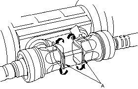
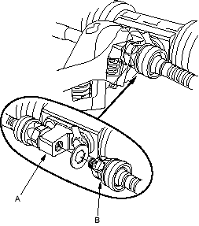
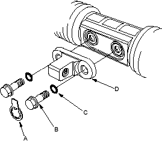
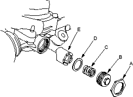

- Locknut wrench, 07ZAA-S5A0100
- Pincers, Oetiker 1098 or equivalent, commercially available.
NOTE:
- Refer to the Exploded View as needed during this procedure.
- Do not allow dust, dirt, or other foreign materials to enter the gearbox.
- RHD type is shown, LHD type is symmetrical.
Removal
- Remove the steering gearbox (see page 17-96).
Disassembly
- Unbend the lock washer (A).

- Hold the bracket (A) with one wrench, and unscrew the both rack ends (B) with another wrench. Remove the lock washers.

- Remove the stop plate (A), the 12 mm flange bolts (B), O-rings (C), bracket (D) from the steering gearbox.

- Loosen the locknut (A), then remove the rack guide screw (B), spring (C), disc washer (D), and rack guide (E) from the steering gearbox.
